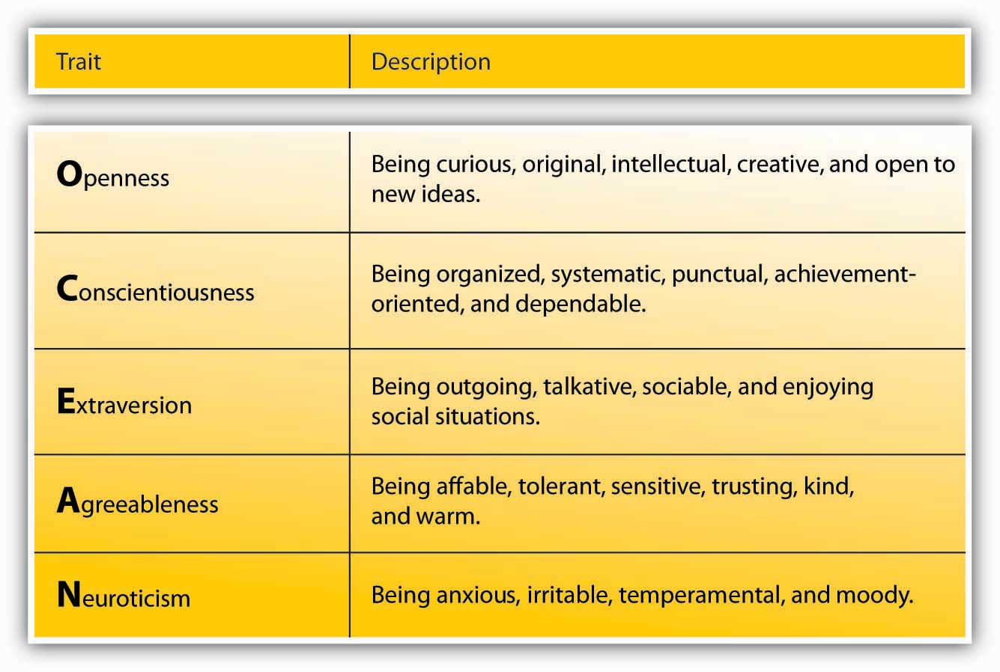
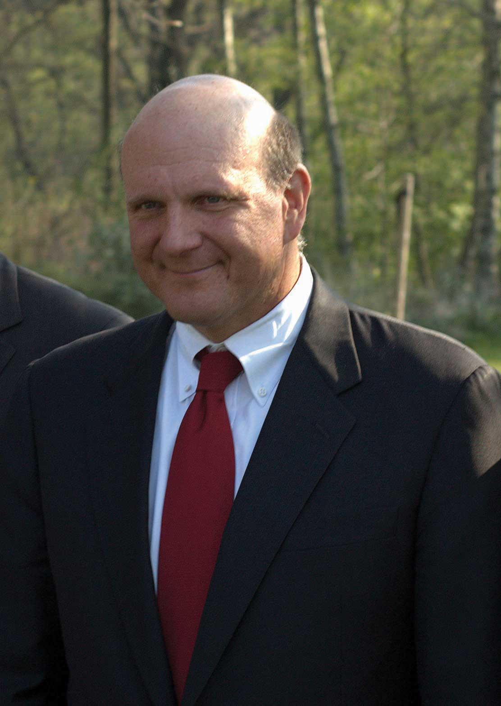
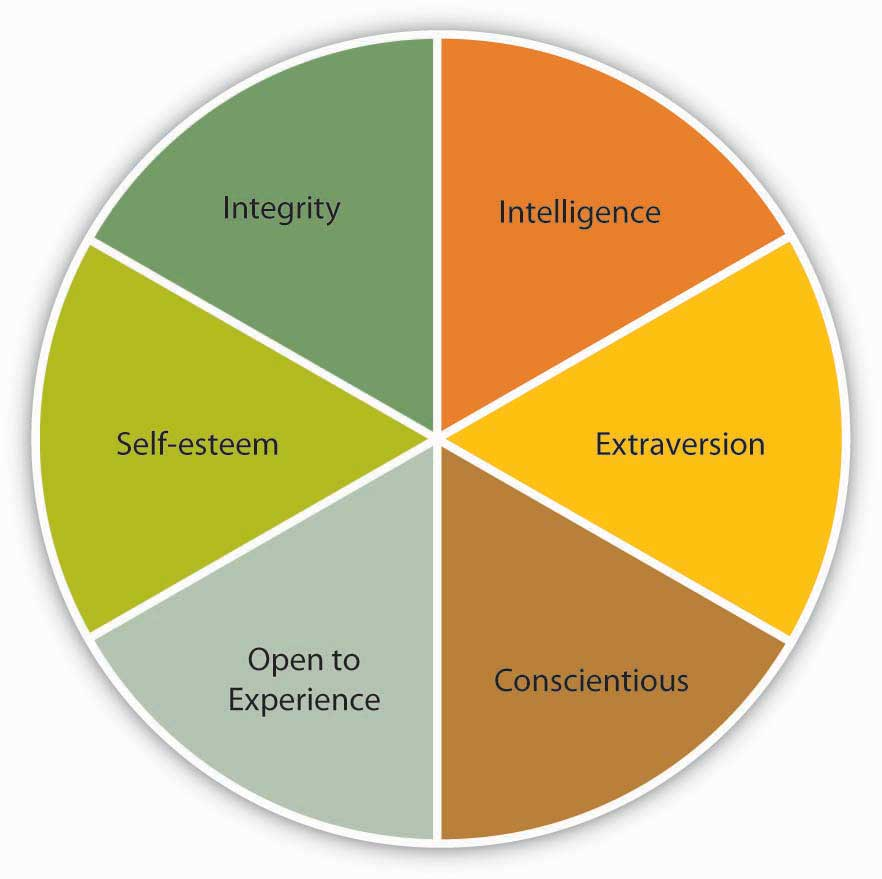
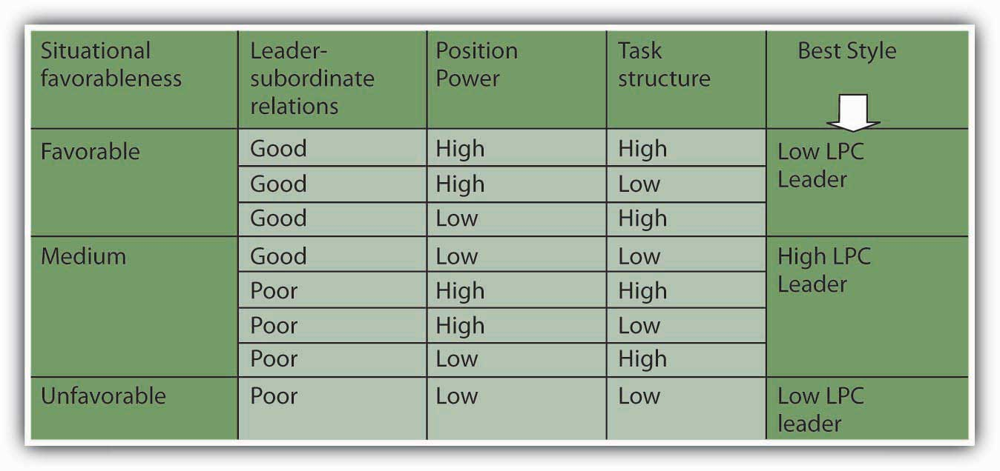
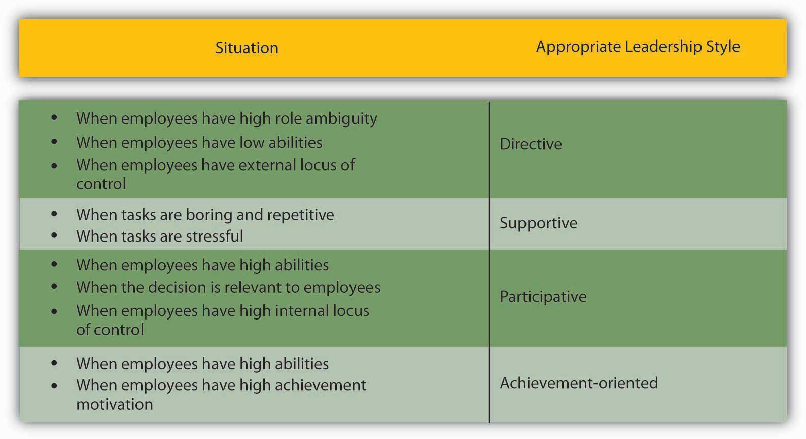
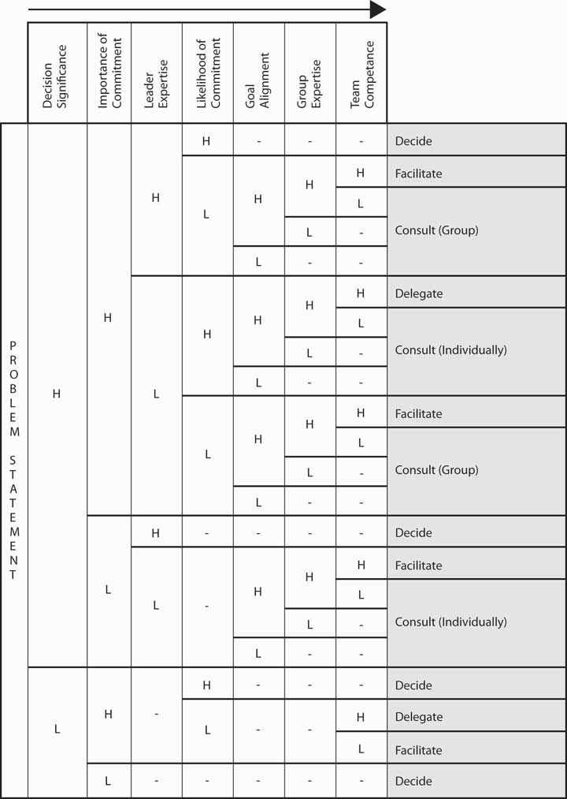
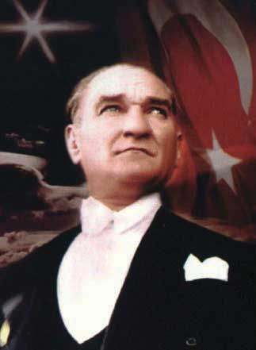
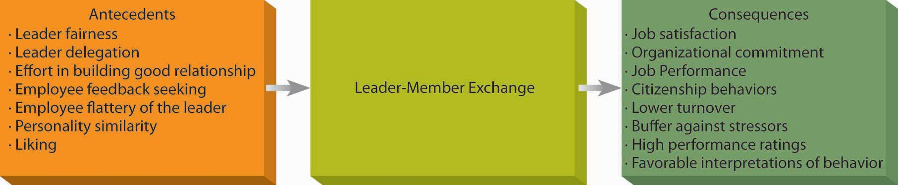
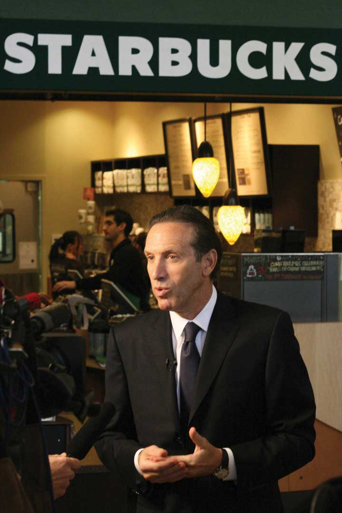

Reading this chapter will help you do the following:
Figure 10.2 The P-O-L-C Framework

Perhaps this is obvious, but leadership is the first of five facets constituting a manager’s leading function in the P-O-L-C framework. LeadershipThe act of influencing others toward a goal. may be defined as the act of influencing others to work toward a goal. Leaders exist at all levels of an organization. Some leaders hold a position of authority and may use the power that comes from their position, as well as their personal power, to influence others; they are called formal leadersThose who hold a position of authority and may utilize the power that comes from their position, as well as their personal power to influence others.. In contrast, informal leadersThose without a formal position of authority within the organization but demonstrate leadership by influencing those around them through personal forms of power. are without a formal position of authority within the organization but demonstrate leadership by influencing others through personal forms of power. One caveat is important here: Leaders do not rely on the use of force to influence people. Instead, people willingly adopt the leader’s goal as their own goal. If a person is relying on force and punishment, the person is a dictator, not a leader.
What makes leaders effective? What distinguishes people who are perceived as leaders from those who are not perceived as leaders? More importantly, how do we train future leaders and improve their leadership ability? These are important questions that have attracted scholarly attention in the past several decades. In this chapter, we will review the history of leadership studies and summarize the major findings relating to these important questions. Around the world, we view leaders as at least partly responsible for their team’s or company’s success and failure. Company chief executive officers (CEOs) are paid millions of dollars in salaries and stock options with the assumption that they hold their company’s future in their hands. In politics, education, sports, and profit and nonprofit sectors, influence of leaders over the behaviors of individuals and organizations is rarely questioned. When people and organizations fail, managers and CEOs are often viewed as responsible. Some people criticize the assumption that leadership always matters and call this belief “the romance of leadership.” However, research evidence pointing to the importance of leaders for organizational success is accumulating.Hogan, R., Curphy, G. J., & Hogan, J. (1994). What we know about leadership: Effectiveness and personality. American Psychologist, 49, 493–504.
Figure 10.3

Source: Used by permission of PepsiCo Incorporated.
She is among the top 100 most influential people according to Time magazine’s 2008 list. She has also ranked number 4 in Forbes’s “Most Influential Women in the World” (2010), number 1 in Fortune’s “50 Most Powerful Women” (2006 through 2009), and number 22 in Fortune’s “25 Most Powerful People in Business” (2007). The lists go on and on. To those familiar with her work and style, this should come as no surprise: Even before she became the CEO of PepsiCo Inc. (NYSE: PEP) in 2006, she was one of the most powerful executives at PepsiCo and one of the two candidates being groomed for the coveted CEO position. Born in Chennai, India, Nooyi graduated from Yale’s School of Management and worked in companies such as the Boston Consulting Group Inc., Motorola Inc., and ABB Inc. She also led an all-girls rock band in high school, but that is a different story.
What makes her one of the top leaders in the business world today? To start with, she has a clear vision for PepsiCo, which seems to be the right vision for the company at this point in time. Her vision is framed under the term “performance with purpose,” which is based on two key ideas: tackling the obesity epidemic by improving the nutritional status of PepsiCo products and making PepsiCo an environmentally sustainable company. She is an inspirational speaker and rallies people around her vision for the company. She has the track record to show that she means what she says. She was instrumental in PepsiCo’s acquisition of the food conglomerate Quaker Oats Company and the juice maker Tropicana Products Inc., both of which have healthy product lines. She is bent on reducing PepsiCo’s reliance on high-sugar, high-calorie beverages, and she made sure that PepsiCo removed trans fats from all its products before its competitors. On the environmental side, she is striving for a net zero impact on the environment. Among her priorities are plans to reduce the plastic used in beverage bottles and find biodegradable packaging solutions for PepsiCo products. Her vision is long term and could be risky for short-term earnings, but it is also timely and important.
Those who work with her feel challenged by her high-performance standards and expectation of excellence. She is not afraid to give people negative feedback—and with humor, too. She pushes people until they come up with a solution to a problem and does not take “I don’t know” for an answer. For example, she insisted that her team find an alternative to the expensive palm oil and did not stop urging them forward until the alternative arrived: rice bran oil.
Nooyi is well liked and respected because she listens to those around her, even when they disagree with her. Her background cuts across national boundaries, which gives her a true appreciation for diversity, and she expects those around her to bring their values to work. In fact, when she graduated from college, she wore a sari to a job interview at Boston Consulting, where she got the job. She is an unusually collaborative person in the top suite of a Fortune 500 company, and she seeks help and information when she needs it. She has friendships with three ex-CEOs of PepsiCo who serve as her informal advisors, and when she was selected to the top position at PepsiCo, she made sure that her rival for the position got a pay raise and was given influence in the company so she did not lose him. She says that the best advice she received was from her father, who taught her to assume that people have good intentions. Nooyi notes that expecting people to have good intentions helps her prevent misunderstandings and show empathy for them. It seems that she is a role model to other business leaders around the world, and PepsiCo is well positioned to tackle the challenges the future may bring.
Case written by [citation redacted per publisher request]. Based on information from Birger, J., Chandler, C., Frott, J., Gimbel, B., Gumbel, P., et al. (2008, May 12). The best advice I ever got. Fortune, 157(10), 70–80; Brady, D. (2007, June 11). Keeping cool in hot water. BusinessWeek. Retrieved April 30, 2010, from http://www.businessweek.com/magazine/content/07_24/b4038067.htm; Compton, J. (2007, October 15). Performance with purpose. Beverage World, 126(10), 32; McKay, B. (2008, May 6). Pepsi to cut plastic used in bottles. Wall Street Journal, Eastern edition, p. B2; Morris, B., & Neering, P. A. (2008, May 3). The Pepsi challenge: Can this snack and soda giant go healthy? CEO Indra Nooyi says yes but cola wars and corn prices will test her leadership. Fortune, 157(4), 54–66; Schultz, H. (2008, May 12). Indra Nooyi. Time, 171(19), 116–117; Seldman, M. (2008, June). Elevating aspirations at PepsiCo. T+D, 62(6), 36–38; The Pepsi challenge (2006, August 19). Economist. Retrieved April 30, 2010, from http://www.economist.com/business-finance/displaystory.cfm?story_id=7803615.
The earliest approach to the study of leadership sought to identify a set of traits that distinguished leaders from nonleaders. What were the personality characteristics and physical and psychological attributes of people who are viewed as leaders? Because of the problems in measurement of personality traits at the time, different studies used different measures. By 1940, researchers concluded that the search for leadership-defining traits was futile. In recent years, though, after advances in personality literature such as the development of the Big Five personality framework, researchers have had more success in identifying traits that predict leadership.House, R. J., & Aditya, R. N. (1997). The social scientific study of leadership: Quo Vadis? Journal of Management, 23, 409–473. Most importantly, charismatic leadership, which is among the contemporary approaches to leadership, may be viewed as an example of a trait approach.
The traits that show relatively strong relations with leadership are as follows:Judge, T. A., Bono, J. E., Ilies, R., & Gerhardt, M. W. (2002). Personality and leadership: A qualitative and quantitative review. Journal of Applied Psychology, 87, 765–780.
General mental ability, which psychologists refer to as “g” and which is often called IQ in everyday language, has been related to a person’s emerging as a leader within a group. Specifically, people who have high mental abilities are more likely to be viewed as leaders in their environment.House, R. J., & Aditya, R. N. (1997). The social scientific study of leadership: Quo Vadis? Journal of Management, 23, 409–473; Ilies, R., Gerhardt, M. W., & Huy, L. (2004). Individual differences in leadership emergence: Integrating meta-analytic findings and behavioral genetics estimates. International Journal of Selection and Assessment, 12, 207–219; Lord, R. G., De Vader, C. L., & Alliger, G. M. (1986). A meta-analysis of the relation between personality traits and leadership perceptions: An application of validity generalization procedures. Journal of Applied Psychology, 71, 402–410; Taggar, S., Hackett, R., & Saha, S. (1999). Leadership emergence in autonomous work teams: Antecedents and outcomes. Personnel Psychology, 52, 899–926. We should caution, though, that intelligence is a positive but modest predictor of leadership. In addition to having high IQ, effective leaders tend to have high emotional intelligence (EQ). People with high EQ demonstrate a high level of self-awareness, motivation, empathy, and social skills. The psychologist who coined the term emotional intelligence, Daniel Goleman, believes that IQ is a threshold quality: it matters for entry- to high-level management jobs, but once you get there, it no longer helps leaders because most leaders already have high IQ. According to Goleman, what differentiates effective leaders from ineffective ones becomes their ability to control their own emotions and understand other people’s emotions, their internal motivation, and their social skills.Goleman, D. (2004, January). What makes a leader? Harvard Business Review, 82(1), 82–91. Many observers believe that Carly Fiorina, the ousted CEO of HP, demonstrated high levels of intelligence but low levels of empathy for the people around her, which led to an overreliance on numbers while ignoring the human cost of her decisions.Karlgaard, R. (2/18/2002). Vote Carly, Forbes, 169(4), 37.
Figure 10.4 Big Five Personality Traits
Source: Goldberg, L. R. (1990). An alternative “description of personality”: The big-five factor structure. Journal of Personality & Social Psychology, 59, 1216–1229.
Psychologists have proposed various systems for categorizing the characteristics that make up an individual’s unique personality; one of the most widely accepted is the Big Five model, which rates an individual according to openness to experience, conscientiousness, extraversion, agreeableness, and Neuroticism. Several of the Big Five personality traits have been related to leadership emergence (whether someone is viewed as a leader by others) and leadership effectiveness.
Figure 10.5
Steve Ballmer, CEO of Microsoft, is an extraverted leader. For example, to celebrate Microsoft’s 25th anniversary, Ballmer enthusiastically popped out of the anniversary cake to surprise the audience.
For example, extraversion is related to leadership. extraverts are sociable, assertive, and energetic people. They enjoy interacting with others in their environment and demonstrate self-confidence. Because they are both dominant and sociable in their environment, they emerge as leaders in a wide variety of situations. Out of all personality traits, extraversion has the strongest relationship to both leader emergence and leader effectiveness. Research shows that conscientious people are also more likely to be leaders. This is not to say that all effective leaders are extraverts, but you are more likely to find extraverts in leadership positions. An example of an introverted leader is Jim Buckmaster, the CEO of Craigslist. He is known as an introvert, and he admits to not having meetings because he does not like them.Buckmaster, Jim. (2008, May). How does he manage? Classified Web site boss. Management Today, 15.
Another personality trait related to leadership is conscientiousness. Conscientious people are organized, take initiative, and demonstrate persistence in their endeavors. Conscientious people are more likely to emerge as leaders and be effective as leaders. Finally, people who have openness to experience—those who demonstrate originality, creativity, and are open to trying new things—tend to emerge as leaders and tend to be effective as leaders.
Self-esteem is not one of the Big Five personality traits, but it is an important aspect of one’s personality. The degree to which people are at peace with themselves and have an overall positive assessment of their self-worth and capabilities seems to be relevant to whether they will be viewed as a leader. Leaders with high self-esteem support their subordinates more, and when punishment needs to be administered, they punish more effectively.Atwater, L. E., Dionne, S. D., Camobreco, J. F., Avolio, B. J., & Lau, A. (1998). Individual attributes and leadership style: Predicting the use of punishment and its effects. Journal of Organizational Behavior, 19, 559–576; Niebuhr, R. E., & Davis, K. R. (1984). Self-esteem: Relationship with leader behavior perceptions as moderated by the duration of the superior-subordinate dyad association, Personality and Social Psychology Buletin, 10, 51–59. It is possible that those with high self-esteem have greater levels of self-confidence and this affects their image in the eyes of their followers. Self-esteem may also explain the relationship between some physical attributes and emerging as a leader. For example, research shows a strong relationship between height and being viewed as a leader (as well as one’s career success over life). It is proposed that self-esteem may be the key to the connection of height with leadership, because people who are taller are also found to have higher self-esteem and therefore may project greater levels of charisma as well as confidence to their followers.Judge, T. A., & Cable, D. M. (2004). The effect of physical height on workplace success and income: Preliminary test of a theoretical model. Journal of Applied Psychology, 89, 428–441.
Figure 10.6 Traits Associated with Leadership
Research also shows that people who are effective as leaders tend to have a moral compass and demonstrate honesty and integrity.Reave, L. (2005). Spiritual values and practices related to leadership effectiveness. Leadership Quarterly, 16, 655–687. Leaders whose integrity is questioned lose their trustworthiness, and they hurt their company’s business along the way. For example, when it was revealed that Whole Foods CEO John Mackey was using a pseudonym to make negative comments online about the company’s rival Wild Oats, his actions were heavily criticized, his leadership was questioned, and the company’s reputation was affected.Farrell, G., & Davidson, P. (2007, July 13). Whole Foods’ CEO was busy guy online. USA Today, Section: Money, 04B.
Figure 10.7
Condoleezza Rice had different responsibilities as the provost of Stanford University compared with her role as secretary of state for the United States. Do you think these differences affected her behavior as a leader?
There are also some traits that are negatively related to emerging as a leader and being successful as a leader. For example, agreeable people who are modest, good natured, and avoid conflict are less likely to be perceived as leaders.Judge, T. A., Bono, J. E., Ilies, R., & Gerhardt, M. W. (2002). Personality and leadership: A qualitative and quantitative review. Journal of Applied Psychology, 87, 765–780. The key to benefiting from the findings of trait researchers is to be aware that not all traits are equally effective in predicting leadership potential across all circumstances. Some organizational situations allow leader traits to make a greater difference.House, R. J., & Aditya, R. N. (1997). The social scientific study of leadership: Quo Vadis? Journal of Management, 23, 409–473. For example, in small, entrepreneurial organizations where leaders have a lot of leeway to determine their own behavior, the type of traits leaders have may make a difference in leadership potential. In large, bureaucratic, and rule-bound organizations, such as the government and the military, a leader’s traits may have less to do with how the person behaves and whether the person is a successful leader.Judge, T. A., Bono, J. E., Ilies, R., & Gerhardt, M. W. (2002). Personality and leadership: A qualitative and quantitative review. Journal of Applied Psychology, 87, 765–780. Moreover, some traits become relevant in specific circumstances. For example, bravery is likely to be a key characteristic in military leaders but not necessarily in business leaders. Scholars now conclude that instead of trying to identify a few traits that distinguish leaders from nonleaders, it is important to identify the conditions under which different traits affect a leader’s performance, as well as whether a person emerges as a leader.Hackman, J. R., & Wageman, R. (2007). Asking the right questions about leadership: Discussion and conclusions. American Psychologist, 62, 43–47.
Many studies searched for a limited set of personal attributes, or traits, which would make someone be viewed as a leader and be successful as a leader. Some traits are consistently related to leadership, such as intelligence (both mental ability and emotional intelligence), personality (extraversion, conscientiousness, openness to experience, self-esteem), and integrity. The main limitation of the trait approach was that it ignored the situation in which leadership occurred. Therefore, it is more useful to specify the conditions under which different traits are needed.
When the trait researchers became disillusioned in 1940s, their attention turned to studying leader behaviors. What did effective leaders actually do? Which behaviors helped them to be perceived as leaders? Which behaviors increased their success?
In order to understand behaviors of effective leaders, researchers at Ohio State University and University of Michigan used many different techniques such as observing leaders in laboratory settings as well as surveying them. This research stream led to the discovery of two broad categories of behaviors: task-oriented behaviors (sometimes called initiating structure) and people-oriented behaviors (also called consideration). Task-oriented leader behaviorsBehaviors involving structuring the roles of subordinates, providing them with instructions and behaving in ways that will increase the performance of the group. (Also called initiating structure.) involve structuring the roles of subordinates, providing them with instructions, and behaving in ways that will increase the performance of the group. Task-oriented behaviors are directives given to employees to get things done and to ensure that organizational goals are met. People-oriented leader behaviorsBehaviors that include showing concern for employee feelings and treating employees with respect. (Also called consideration.) include showing concern for employee feelings and treating employees with respect. People-oriented leaders genuinely care about the well-being of their employees and they demonstrate their concern in their actions and decisions. At the time, researchers thought that these two categories of behaviors were the keys to the puzzle of leadership.See House, R. J., & Aditya, R. N. (1997). The social scientific study of leadership: Quo Vadis? Journal of Management, 23, 409–473. However, research did not support the argument that demonstrating both of these behaviors would necessarily make leaders effective.Nystrom, P. C. (1978). Managers and the hi-hi leader myth. Academy of Management Journal, 21, 325–331.
When we look at the overall findings regarding these leader behaviors, it seems that both types of behaviors, in the aggregate, are beneficial to organizations but for different purposes. For example, when leaders demonstrate people-oriented behaviors, employees tend to be more satisfied and react more positively. However, when leaders are task-oriented, productivity tends to be a bit higher.Judge, T. A., Piccolo, R. F., & Ilies, R. (2004). The forgotten ones? The validity of consideration and initiating structure in leadership research. Journal of Applied Psychology, 89, 36–51. Moreover, the situation in which these behaviors are demonstrated seems to matter. In small companies, task-oriented behaviors were found to be more effective than in large companies.Miles, R. H., & Petty, M. M. (1977). Leader effectiveness in small bureaucracies. Academy of Management Journal, 20, 238–250. There is also some evidence that working under a leader with very high levels of task-oriented behaviors may cause burnout on the part of employees.Seltzer, J., & Numerof, R. E. (1988). Supervisory leadership and subordinate burnout. Academy of Management Journal, 31, 439–446.
Another question behavioral researchers focused on was how leaders actually make decisions, and the influence of decision-making styles on leader effectiveness and employee reactions. Three types of decision-making styles were studied. In authoritarian decision makingWhen leaders make the decision alone without necessarily involving employees in the decision-making process., leaders make the decision alone without necessarily involving employees in the decision-making process. When leaders use democratic decision makingMaking choices among alternative courses of action, including inaction., employees participate in the making of the decision. Finally, leaders using laissez-faire decision makingWhen leaders leave employees alone to make the decision. The leader provides minimum guidance and involvement in the decision. leave employees alone to make the decision; the leader provides minimum guidance and involvement in the decision.
As with other lines of research on leadership, research did not identify one decision-making style as the best one. It seems that the effectiveness of the style the leader is using depends on the circumstances. A review of the literature shows that when leaders use more democratic decision-making styles, employees tend to be more satisfied, but the effects on decision quality or employee productivity are weaker. Moreover, instead of expecting to be involved in every single decision, employees seem to care more about the overall participativeness of the organizational climate.Miller, K. I., & Monge, P. R. (1986). Participation, satisfaction, and productivity: A meta-analytic review. Academy of Management Journal, 29, 727–753. Different types of employees may also expect different levels of involvement. In a study conducted in a research organization, scientists viewed democratic leadership most favorably and authoritarian leadership least favorably,Baumgartel, H. (1957). Leadership style as a variable in research administration. Administrative Science Quarterly, 2, 344–360. but employees working in large groups where opportunities for member interaction was limited preferred authoritarian leader decision making.Vroom, V. H., & Mann, F. C. (1960). Leader authoritarianism and employee attitudes. Personnel Psychology, 13, 125–140.
Finally, the effectiveness of each style seems to depend on who is using it. There are examples of effective leaders using both authoritarian and democratic styles. For example, Larry Page and Sergey Brin at Google are known for their democratic decision-making styles. At Hyundai USA, high-level managers use authoritarian decision-making styles, and the company is performing well.Deutschman, A. (2004, September). Googling for courage. Fast Company, 86, 58–59; Welch, D., Kiley, D., & Ihlwan, M. (2008, March 17). My way or the highway at Hyundai. Business Week, 4075, 48–51.
Figure 10.9

Google cofounders Larry Page and Sergey Brin (shown here) are known for their democratic decision-making styles.
The track record of the laissez-faire decision-making style is more problematic. Research shows that this style is negatively related to employee satisfaction with leaders and leader effectiveness.Judge, T. A., & Piccolo, R. F. (2004). Transformational and transactional leadership: A meta-analytic test of their relative validity. Journal of Applied Psychology, 89, 755–768. Laissez-faire leaders create high levels of ambiguity about job expectations on the part of employees, and employees also engage in higher levels of conflict when leaders are using the laissez-faire style.Skogstad, A., Einarsen, S., Torsheim, T., Aasland, M. S., & Hetland, H. (2007). The destructiveness of laissez-faire leadership behavior. Journal of Occupational Health Psychology, 12, 80–92.
Behavioral approaches, similar to trait approaches, fell out of favor because they neglected the environment in which behaviors are demonstrated. The hope of the researchers was that the identified behaviors would predict leadership under all circumstances, but it may be unrealistic to expect that a given set of behaviors would work under all circumstances. What makes a high school principal effective on the job may be very different from what makes a military leader, which would be different from behaviors creating success in small or large business enterprises. It turns out that specifying the conditions under which these behaviors are more effective may be a better approach.
When researchers failed to identify a set of traits that would distinguish effective from ineffective leaders, research attention turned to the study of leader behaviors. Leaders may demonstrate task-oriented and people-oriented behaviors. Both seem to be related to important outcomes, with task-oriented behaviors more strongly relating to leader effectiveness and people-oriented behaviors leading to employee satisfaction. Leaders can also make decisions using authoritarian, democratic, or laissez-faire styles. While laissez-faire has certain downsides, there is no best style and the effectiveness of each style seems to vary across situations. Because of the inconsistency of results, researchers realized the importance of the context in which leadership occurs, which paved the way to contingency theories of leadership.
What is the best leadership style? By now, you must have realized that this may not the right question to ask. Instead, a better question might be: under which conditions are different leadership styles more effective? After the disappointing results of trait and behavioral approaches, several scholars developed leadership theories that specifically incorporated the role of the environment. Researchers started following a contingency approach to leadership—rather than trying to identify traits or behaviors that would be effective under all conditions, the attention moved toward specifying the situations under which different styles would be effective.
The earliest and one of the most influential contingency theories was developed by Frederick Fiedler.Fiedler, F. (1967). A theory of leadership effectiveness, New York: McGraw-Hill; Fiedler, F. E. (1964). A contingency model of leader effectiveness. In L. Berkowitz (ed.), Advances in experimental social psychology (Vol. 1, 149–190). New York: Academic Press. According to the theory, a leader’s style is measured by a scale called Least Preferred Coworker (LPC) scale. People who are filling out this survey are asked to think of a person who is their least preferred coworker. Then, they rate this person in terms of how friendly, nice, and cooperative this person is. Imagine someone you did not enjoy working with. Can you describe this person in positive terms? In other words, if you can say that the person you hated working with was still a nice person, you would have a high LPC score. This means that you have a people-oriented personality and you can separate your liking of a person from your ability to work with that person. However, if you think that the person you hated working with was also someone you did not like on a personal level, you would have a low LPC score. To you, being unable to work with someone would mean that you also dislike that person. In other words, you are a task-oriented person.
According to Fiedler’s theory, different people can be effective in different situations. The LPC score is akin to a personality trait and is not likely to change. Instead, placing the right people in the right situation or changing the situation is important to increase a leader’s effectiveness. The theory predicts that in “favorable” and “unfavorable” situations, a low LPC leader—one who has feelings of dislike for coworkers who are difficult to work with—would be successful. When situational favorableness is medium, a high LPC leader—one who is able to personally like coworkers who are difficult to work with—is more likely to succeed.
How does Fiedler determine whether a situation is favorable, medium, or unfavorable? There are three conditions creating situational favorableness: (1) leader-subordinate relations, (2) position power, and (3) task structure. If the leader has a good relationship with most people, has high position power, and the task is structured, the situation is very favorable. When the leader has low-quality relations with employees, has low position power, and the task is relatively unstructured, the situation is very unfavorable.
Research partially supports the predictions of Fiedler’s contingency theory.Peters, L. H., Hartke, D. D., & Pohlmann, J. T. (1985). Fiedler’s contingency theory of leadership: An application of the meta-analysis procedures of Schmidt and Hunter. Psychological Buletin, 97, 274–285; Strube, M. J., & Garcia, J. E. (1981). A meta-analytic investigation of Fiedler’s contingency model of leadership effectiveness. Psychological Buletin, 90, 307–321; Vecchio, R. P. (1983). Assessing the validity of Fiedler’s contingency model of leadership effectiveness: A closer look at Strube and Garcia. Psychological Buletin, 93, 404–408. Specifically, there is more support for the theory’s predictions about when low LPC leadership should be used, but the part about when high LPC leadership would be more effective received less support. Even though the theory was not supported in its entirety, it is a useful framework to think about when task- versus people-oriented leadership may be more effective. Moreover, the theory is important because of its explicit recognition of the importance of the context of leadership.
Figure 10.10 Situational Favorableness
Source: Based on information in Fiedler, F. (1967). A Theory of Leadership Effectiveness. New York: McGraw-Hill; Fiedler, F. E. (1964). A contingency model of leader effectiveness. In L. Berkowitz (Ed.), Advances in Experimental Social Psychology (Vol. 1, pp. 149–190). New York: Academic Press.
Another contingency approach to leadership is Kenneth Blanchard and Paul Hersey’s Situational Leadership Theory (SLT) which argues that leaders must use different leadership styles depending on their followers’ development level.Hersey, P.H., Blanchard, K.H., ' Johnson, D.E. (2007). Management of Organizational Behavior: Leadership human resources. Upper Saddle River, NJ: Prentice Hall. According to this model, employee readiness (defined as a combination of their competence and commitment levels) is the key factor determining the proper leadership style. This approach has been highly popular with 14 million managers across 42 countries undergoing SLT training and 70% of Fortune 500 companies employing its use.http://www.situational.com/Views/SituationalLeadership/RightHereRightNow.aspx
The model summarizes the level of directive and supportive behaviors that leaders may exhibit. The model argues that to be effective, leaders must use the right style of behaviors at the right time in each employee’s development. It is recognized that followers are key to a leader’s success. Employees who are at the earliest stages of developing are seen as being highly committed but with low competence for the tasks. Thus, leaders should be highly directive and less supportive. As the employee becomes more competent, the leader should engage in more coaching behaviors. Supportive behaviors are recommended once the employee is at moderate to high levels of competence. And finally, delegating is the recommended approach for leaders dealing with employees who are both highly committed and highly competent. While the SLT is popular with managers, relatively easy to understand and use, and has endured for decades, research has been mixed in its support of the basic assumptions of the model.Blank, W., Green, S.G., ' Weitzel, J.R. (1990). A test of the situational leadership theory. Personnel Psychology, 43, 579–597; Graeff, C. L. (1983). The situational leadership theory: A critical review. Academy of Management Review, 8, 285–291; Fernandez, C.F., ' Vecchio, R.P. (2002). Situational leadership theory revisited: A test of an across-jobs perspective. Leadership Quarterly, 8, 67–84. Therefore, while it can be a useful way to think about matching behaviors to situations, overreliance on this model, at the exclusion of other models, is premature.
Table 10.1
| Follower Readiness Level | Competence (Low) | Competence (Low) | Competence (Moderate to High) | Competence (High) |
| Commitment (High) | Commitment (Low) | Commitment (Variable) | Commitment (High) | |
| Recommended Leader Style | Directing Behavior | Coaching Behavior | Supporting Behavior | Delegating Behavior |
Situational Leadership Theory helps leaders match their style to follower readiness levels.
Robert House’s path-goal theory of leadership is based on the expectancy theory of motivation.House, R. J. (1971). A path goal theory of leader effectiveness. Administrative Science Quarterly, 16(3), 321–338. Expectancy theory of motivation suggests that employees are motivated when they believe—or expect—that (1) their effort will lead to high performance, (2) their high performance will be rewarded, and (3) the rewards they will receive are valuable to them. According to the path-goal theory of leadership, the leader’s main job is to make sure that all three of these conditions exist. Thus, leaders will create satisfied and high-performing employees by making sure that employee effort leads to performance, and their performance is rewarded. The leader removes roadblocks along the way and creates an environment that subordinates find motivational.
The theory also makes specific predictions about what type of leader behavior will be effective under which circumstances.House, R. J. (1996). Path-goal theory of leadership: Lessons, legacy, and a reformulated theory. Leadership Quarterly, 7, 323–352; House, R. J., & Mitchell, T. R. (1974). Path-goal theory of leadership. Journal of Contemporary Business, 3, 81–97. The theory identifies four leadership styles. Each of these styles can be effective, depending on the characteristics of employees (such as their ability level, preferences, locus of control, achievement motivation) and characteristics of the work environment (such as the level of role ambiguity, the degree of stress present in the environment, the degree to which the tasks are unpleasant).
Path-goal theory of leadershipTheory stating that a leader’s main job is to motivate employees with the beliefs that (1) their effort will lead to high performance, (2) their high performance will be rewarded, and (3) the rewards they will receive are valuable to them. identifies four styles leaders may adopt. Directive leadersThose leaders who provide specific directions to their employees. provide specific directions to their employees. They lead employees by clarifying role expectations, setting schedules, and making sure that employees know what to do on a given workday. The theory predicts that the directive style will work well when employees are experiencing role ambiguity on the job. If people are unclear about how to go about doing their jobs, giving them specific directions will motivate them. However, if employees already have role clarity, and if they are performing boring, routine, and highly structured jobs, giving them direction does not help. In fact, it may hurt them by creating an even more restricting atmosphere. Directive leadership is also thought to be less effective when employees have high levels of ability. When managing professional employees with high levels of expertise and job-specific knowledge, telling them what to do may create a low empowerment environment, which impairs motivation.
Supportive leadersThose leaders who provide emotional support to employees. provide emotional support to employees. They treat employees well, care about them on a personal level, and are encouraging. Supportive leadership is predicted to be effective when employees are under a lot of stress or when they are performing boring and repetitive jobs. When employees know exactly how to perform their jobs but their jobs are unpleasant, supportive leadership may also be effective.
Participative leadersThose leaders who make sure that employees are involved in making important decisions. make sure that employees are involved in making important decisions. Participative leadership may be more effective when employees have high levels of ability and when the decisions to be made are personally relevant to them. For employees who have a high internal locus of control, or the belief that they can control their own destinies, participative leadership gives employees a way of indirectly controlling organizational decisions, which will be appreciated.
Achievement-oriented leadersThose leaders who set goals for employees and encourage them to reach their goals. set goals for employees and encourage them to reach their goals. Their style challenges employees and focuses their attention on work-related goals. This style is likely to be effective when employees have both high levels of ability and high levels of achievement motivation.
Figure 10.12 Predictions of Path-Goal Theory
Source: On the basis of information presented in House, R. J. (1996). Path-goal theory of leadership: Lessons, legacy, and a reformulated theory. Leadership Quarterly, 7, 323–352; House, R. J., & Mitchell, T. R. (1974). Path-goal theory of leadership. Journal of Contemporary Business, 3, 81–97.
The path-goal theory of leadership has received partial but encouraging levels of support from researchers. Because the theory is highly complicated, it has not been fully and adequately tested.House, R. J., & Aditya, R. N. (1997). The social scientific study of leadership: Quo Vadis? Journal of Management, 23, 409–473; Stinson, J. E., & Johnson, T. W. (1975). The path-goal theory of leadership: A partial test and suggested refinement. Academy of Management Journal, 18, 242–252; Wofford, J. C., & Liska, L. Z. (1993). Path-goal theories of leadership: A meta-analysis. Journal of Management, 19, 857–876. The theory’s biggest contribution may be that it highlights the importance of a leader’s ability to change styles, depending on the circumstances. Unlike Fiedler’s contingency theory, in which the leader’s style is assumed to be fixed and only the environment can be changed, House’s path-goal theory underlines the importance of varying one’s style, depending on the situation.
Yale School of Management professor Victor Vroom and his colleagues Philip Yetton and Arthur Jago developed a decision-making tool to help leaders determine how much involvement they should seek when making decisions.Vroom, V. H. (2000). Leadership and the decision making process. Organizational Dynamics, 68, 82–94; Vroom, V. H., & Yetton, P. W. (1973). Leadership and Decision-Making. Pittsburgh: University of Pittsburgh Press; Jago, A., & Vroom, V. H. (1980). An evaluation of two alternatives to the Vroom/Yetton Normative Model. Academy of Management Journal, 23, 347–355; Vroom, V. H., & Jago, A. G. 1988. The new leadership: Managing participation in organizations. Englewood Cliffs, NJ: Prentice Hall. The model starts by having leaders answer several key questions and working their way through a funnel based on their responses.
Let’s try it. Imagine that you want to help your employees lower their stress so that you can minimize employee absenteeism. There are a number of approaches you could take to reduce employee stress, such as offering gym memberships, providing employee assistance programs, establishing a nap room, and so forth. Let’s refer to the model and start with the first question. As you answer each question as high (H) or low (L), follow the corresponding path down the funnel.
Based on the answers to the questions we gave, the normative approach recommends consulting employees as a group. In other words, the leader may make the decision alone after gathering information from employees and is not advised to delegate the decision to the team or to make the decision alone with no input from the team members.
Figure 10.13
Vroom and Yetton’s leadership decision tree shows leaders which styles will be most effective in different situations.
Used by permission from Victor H. Vroom.
Vroom and Yetton’s model is somewhat complicated, but research results support the validity of the model. On average, leaders using the style recommended by the model tend to make more effective decisions compared with leaders using a style not recommended by the model.Vroom, V. H., & Jago, G. (1978). On the validity of the Vroom Yetton model. Journal of Applied Psychology, 63, 151–162.
The contingency approaches to leadership describe the role the situation would play in choosing the most effective leadership style. Fiedler’s contingency theory argued that task-oriented leaders would be most effective when the situation was the most and the least favorable, whereas relationship-oriented leaders would be effective when situational favorableness was moderate. Situational Leadership Theory takes the maturity level of followers into account. House’s path-goal theory states that the leader’s job is to ensure that employees view their effort as leading to performance and increase the belief that performance would be rewarded. For this purpose, leaders would use directive, supportive, participative, and achievement-oriented leadership styles, depending on what employees needed to feel motivated. Vroom and Yetton’s normative decision model is a guide leaders can use to decide how participative they should be given decision environment characteristics.
What leadership theories make the greatest contributions to today’s business environment? In this section, we will review the most recent developments in the field of leadership.
Transformational leadership theory is a recent addition to the literature, but more research has been conducted on this theory than all the contingency theories combined. The theory distinguishes between transformational and transactional leaders. Transformational leadersThose leaders who lead employees by aligning employee goals with the leader’s goals. lead employees by aligning employee goals with the leader’s goals. Thus, employees working for transformational leaders start focusing on the company’s well-being rather than on what is best for them as individual employees. However, transactional leadersThose leaders who ensure that employees demonstrate the right behaviors because the leader provides resources in exchange. ensure that employees demonstrate the right behaviors because the leader provides resources in exchange.Bass, B. M. (1985). Leadership and performance beyond expectations. New York: Free Press; Burns, J. M. (1978). Leadership. New York: Harper & Row.
Transformational leaders have four tools in their possession, which they use to influence employees and create commitment to the company goals.Bass, B. M. (1985). Leadership and performance beyond expectations. New York: Free Press; Burns, J. M. (1978). Leadership. New York: Harper & Row; Bycio, P., Hackett, R. D., & Allen, J. S. (1995). Further assessment of Bass’s (1985) conceptualization of transactional and transformational leadership. Journal of Applied Psychology, 80, 468–478; Judge, T. A., & Piccolo, R. F. (2004). Transformational and transactional leadership: A meta-analytic test of their relative validity. Journal of Applied Psychology, 89, 755–768. First, transformational leaders are charismatic. CharismaBehaviors leaders demonstrate that create confidence, commitment, and admiration to the leader. refers to behaviors leaders demonstrate that inspire confidence, commitment, and admiration toward the leader.Shamir, B., House, R. J., & Arthur, M. B. (1993). The motivational effects of charismatic leadership: A self-concept based theory. Organization Science, 4, 577–594. Charismatic individuals have a “magnetic” personality that is appealing to followers. Leaders such as Barack Obama, John F. Kennedy, Ronald Reagan, Mahatma Gandhi, Mustafa Kemal Ataturk (founder of the Republic of Turkey), and Winston Churchill are viewed as charismatic. Second, transformational leaders use inspirational motivationWhen leaders come up with a vision that is inspiring to others. or come up with a vision that is inspiring to others. Third is the use of intellectual stimulationWhen leaders challenge organizational norms and status quo and encourage employees to think creatively and work harder., which means that they challenge organizational norms and status quo, and they encourage employees to think creatively and work harder. Finally, they use individualized considerationWhen leaders show personal care and concern for the well-being of their followers., which means that they show personal care and concern for the well-being of their followers. Examples of transformational business leaders include Steve Jobs of Apple; Lee Iacocca, who transformed Chrysler in the 1980s; and Jack Welch, who was the CEO of General Electric for 20 years. Each of these leaders is charismatic and is held responsible for the turnarounds of their companies.
While transformational leaders rely on their charisma, persuasiveness, and personal appeal to change and inspire their companies, transactional leaders use three other methods. Contingent rewardsRewarding employees for their accomplishments. mean rewarding employees for their accomplishments. Active management by exceptionLeaving employees alone but at the same time proactively predicting potential problems and preventing them from occurring. involves leaving employees to do their jobs without interference, but at the same time proactively predicting potential problems and preventing them from occurring. Passive management by exceptionLeaving employees alone but then coming to the rescue if anything goes wrong. is similar in that it involves leaving employees alone, but in this method, the manager waits until something goes wrong before coming to the rescue.
Which leadership style do you think is more effective, transformational or transactional? Research shows that transformational leadership is a powerful influence over leader effectiveness as well as employee satisfaction.Judge, T. A., & Piccolo, R. F. (2004). Transformational and transactional leadership: A meta-analytic test of their relative validity. Journal of Applied Psychology, 89, 755–768. In fact, transformational leaders increase the intrinsic motivation of their followers, build more effective relationships with employees, increase performance and creativity of their followers, increase team performance, and create higher levels of commitment to organizational change efforts.Herold, D. M., Fedor, D. B., Caldwell, S., Liu, Y. (2008). The effects of transformational and change leadership on employees’ commitment to a change: A multilevel study. Journal of Applied Psychology, 93, 346–357; Piccolo, R. F., & Colquitt, J. A. (2006). Transformational leadership and job behaviors: The mediating role of core job characteristics. Academy of Management Journal, 49, 327–340; Schaubroeck, J., Lam, S. K., & Cha, S. E. (2007). Embracing transformational leadership: Team values and the impact of leader behavior on team performance. Journal of Applied Psychology, 92, 1020–1030; Shin, S. J., & Zhou, J. (2003). Transformational leadership, conservation, and creativity: Evidence from Korea. Academy of Management Journal, 46, 703–714; Wang, H., Law, K. S., Hackett, R. D., Duanxu, W., Zhen, X. C. (2005). Leader-member exchange as a mediator of the relationship between transformational leadership and followers’ performance and organizational citizenship behavior. Academy of Management Journal, 48, 420–432. However, except for passive management by exception, the transactional leadership styles are also effective, and they also have positive influences over leader performance as well as employee attitudes.Judge, T. A., & Piccolo, R. F. (2004). Transformational and transactional leadership: A meta-analytic test of their relative validity. Journal of Applied Psychology, 89, 755–768. To maximize their effectiveness, leaders are encouraged to demonstrate both transformational and transactional styles. They should also monitor themselves to avoid demonstrating passive management by exception or leaving employees to their own devices until problems arise.
Why is transformational leadership more effective? The key factor may be trustThe belief that the other party will show integrity, fairness, and predictability in one’s actions toward the other.. Trust is the belief that the leader will show integrity, fairness, and predictability in his or her dealings with others. Research shows that when leaders demonstrate transformational leadership behaviors, followers are more likely to trust the leader. The tendency to trust in transactional leaders is substantially lower. Because transformational leaders express greater levels of concern for people’s well-being, and appeal to people’s values, followers are more likely to believe that the leader has a trustworthy character.Dirks, K. T., & Ferrin, D. L. (2002). Trust in leadership: Meta-analytic findings and implications for research and practice. Journal of Applied Psychology, 87, 611–628.
Is transformational leadership genetic? Some people assume that charisma is something people are born with. You either have charisma or you don’t. However, research does not support this idea. We must acknowledge that there is a connection between some personality traits and charisma. Specifically, people who have a neurotic personality tend to demonstrate lower levels of charisma, and people who are extraverted tend to have higher levels of charisma. However, personality explains only around 10% of the variance in charisma.Bono, J. E., & Judge, T. A. (2004). Personality and transformational and transactional leadership: A meta-analysis. Journal of Applied Psychology, 89, 901–910. A large body of research has shown that it is possible to train people to increase their charisma and increase their transformational leadership.Barling, J., Weber, T., & Kelloway, E. K. (1996). Effects of transformational leadership training on attitudinal and financial outcomes: A field experiment. Journal of Applied Psychology, 81, 827–832; Dvir, T., Eden, D., Avolio, B. J., & Shamir, B. (2002). Impact of transformational leadership on follower development and performance: A field experiment. Academy of Management Journal, 45, 735–744; Frese, M., Beimel, S., & Schoenborg, S. (2003). Action training for charismatic leadership: Two evaluations of studies of a commercial training module on inspirational communication of a vision. Personnel Psychology, 56, 671–697.
Figure 10.14
Mustafa Kemal Ataturk, the founder of Turkish Republic and its first president, is known as a charismatic leader. He is widely admired and respected in Turkey and around the world. His picture appears in all schools, state buildings, denominations of Turkish lira, and in many people’s homes in Turkey.
Even if charisma may be teachable, a more fundamental question remains: is it really needed? Charisma is only one element of transformational leadership and leaders can be effective without charisma. In fact, charisma has a dark side. For every charismatic hero such as Lee Iacocca, Steve Jobs, and Virgin’s Sir Richard Branson, there are charismatic personalities who harmed their organizations or nations, such as Adolph Hitler of Germany and Jeff Skilling of Enron. Leadership experts warn that when organizations are in a crisis, a board of directors or hiring manager may turn to heroes who they hope will save the organization and sometimes hire people who have no other particular qualifications outside of perceived charisma.Khurana, R. (September 2002). The curse of the superstar CEO. Harvard Business Review, 80(9), 60–66.
An interesting study shows that when companies have performed well, their CEOs are perceived as charismatic, but CEO charisma has no relation to the future performance of a company.Agle, B. R., Nagarajan, N. J., Sonnenfeld, J. A., & Srinivasan, D. (2006). Does CEO charisma matter? An empirical analysis of the relationships among organizational performance, environmental uncertainty, and top management team perceptions of CEO charisma. Academy of Management Journal, 49, 161–174. So, what we view as someone’s charisma may be largely because of their association with a successful company, and the success of a company depends on a large set of factors, including industry effects and historical performance. While it is true that charismatic leaders may sometimes achieve great results, the search for charismatic leaders under all circumstances may be irrational.
Leader-member exchange (LMX) theory proposes that the type of relationship leaders have with their followers (members of the organization) is the key to understanding how leaders influence employees. Leaders form different types of relationships with their employees. In high-quality LMX relationshipsA high-quality, trust-based relationship between a leader and a follower., the leader forms a trust-based relationship with the member. The leader and member like each other, help each other when needed, and respect one another. In these relationships, the leader and the member are both ready to go above and beyond their job descriptions to promote the other’s ability to succeed. In contrast, in low-quality LMX relationshipsA situation where the leader and the employee have lower levels of trust, liking, and respect toward each other., the leader and the member have lower levels of trust, liking, and respect toward each other. These relationships do not have to involve actively disliking each other, but the leader and member do not go beyond their formal job descriptions in their exchanges. In other words, the member does his or her job, the leader provides rewards and punishments, and the relationship does not involve high levels of loyalty or obligation toward each other.Dansereau, F., Jr., Graen, G., & Haga, W. J. (1975). A vertical dyad linkage approach to leadership within formal organizations: A longitudinal investigation of the role making process. Organizational Behavior & Human Performance, 13(1), 46–78; Erdogan, B., & Liden, R. C. (2002). Social exchanges in the workplace: A review of recent developments and future research directions in leader-member exchange theory. In L. L. Neider & C. A. Schriesheim (Eds.), Leadership (pp. 65–114). Greenwich, CT: Information Age Press; Gerstner, C. R., & Day, D. V. (1997). Meta-analytic review of leader-member exchange theory: Correlates and construct issues. Journal of Applied Psychology, 82, 827–844; Graen, G. B., & Uhl-Bien, M. (1995). Relationship-based approach to leadership: Development of leader-member exchange (LMX) theory over 25 years: Applying a multi-level multi-domain perspective. Leadership Quarterly, 6(2), 219–247; Liden, R. C., & Maslyn, J. M. (1998). Multidimensionality of leader-member exchange: An empirical assessment through scale development. Journal of Management, 24, 43–72.
Figure 10.15 Factors Contributing to the Development of a High-Quality Leader-Member Exchange and Its Consequences
If you have work experience, you may have witnessed the different types of relationships managers form with their employees. In fact, many leaders end up developing differentiated relationships with their followers. Within the same work group, they may have in-group members who are close to them and out-group members who are more distant. If you have ever been in a high-quality LMX relationship with your manager, you may attest to its advantages. Research shows that high-quality LMX members are more satisfied with their jobs, more committed to their companies, have higher levels of clarity about what is expected of them, and perform at a higher level.Gerstner, C. R., & Day, D. V. (1997). Meta-analytic review of leader-member exchange theory: Correlates and construct issues. Journal of Applied Psychology, 82, 827–844; Hui, C., Law, K. S., & Chen, Z. X. (1999). A structural equation model of the effects of negative affectivity, leader-member exchange, and perceived job mobility on in-role and extra-role performance: A Chinese case. Organizational Behavior and Human Decision Processes, 77, 3–21; Kraimer, M. L., Wayne, S. J., & Jaworski, R. A. (2001). Sources of support and expatriate performance: The mediating role of expatriate adjustment. Personnel Psychology, 54, 71–99; Liden, R. C., Wayne, S. J., & Sparrowe, R. T. (2000). An examination of the mediating role of psychological empowerment on the relations between the job, interpersonal relationships, and work outcomes. Journal of Applied Psychology, 85, 407–416; Settoon, R. P., Bennett, N., & Liden, R. C. (1996). Social exchange in organizations: Perceived organizational support, leader-member exchange, and employee reciprocity. Journal of Applied Psychology, 81, 219–227; Tierney, P., Farmer, S. M., & Graen, G. B. (1999). An examination of leadership and employee creativity: The relevance of traits and relationships. Personnel Psychology, 52, 591–620; Wayne, S. J., Shore, L. M., & Liden. R. C. (1997). Perceived organizational support and leader-member exchange: A social exchange perspective. Academy of Management Journal, 40, 82–111. Their high levels of performance may not be a surprise because they may receive higher levels of resources and help from their managers as well as more information and guidance. If they have questions, these employees feel more comfortable seeking feedback or information.Chen, Z., Lam, W., & Zhong, J. A. (2007). Leader-member exchange and member performance: A new look at individual-level negative feedback seeking behavior and team-level empowerment climate. Journal of Applied Psychology, 92, 202–212. Because of all the help, support, and guidance they receive, those employees who have a good relationship with the manager are in a better position to perform well. Given all they receive, these employees are motivated to reciprocate to the manager, and therefore they demonstrate higher levels of citizenship behaviors such as helping the leader and coworkers.Ilies, R., Nahrgang, J. D., & Morgeson, F. P. (2007). Leader-member exchange and citizenship behaviors: A meta-analysis. Journal of Applied Psychology, 92, 269–277. Being in a high-quality LMX relationship is also advantageous because a high-quality relationship is a buffer against many stressors, such as being a misfit in a company, having personality traits that do not match job demands, and having unmet expectations.Bauer, T. N., Erdogan, B., Liden, R. C., & Wayne, S. J. (2006). A longitudinal study of the moderating role of extraversion: Leader-member exchange, performance, and turnover during new executive development. Journal of Applied Psychology, 91, 298–310; Erdogan, B., Kraimer, M. L., & Liden, R. C. (2004). Work value congruence and intrinsic career success. Personnel Psychology, 57, 305–332; Major, D. A., Kozlowski, S. W., Chao, G. T., Gardner, P. D. (1995). A longitudinal investigation of newcomer expectations, early socialization outcomes, and the moderating effects of role development factors. Journal of Applied Psychology, 80, 418–431. The list of benefits high-quality LMX employees receive is long, and it is not surprising that these employees are less likely to leave their jobs.Ferris, G. R. (1985). Role of leadership in the employee withdrawal process: A constructive replication. Journal of Applied Psychology, 70, 777–781; Graen, G. B., Liden, R. C., & Hoel, W. (1982). Role of leadership in the employee withdrawal process. Journal of Applied Psychology, 67, 868–872.
The problem, of course, is that not all employees have a high-quality relationship, and those who are in the leader’s out-group may suffer as a result. But how do you end up developing such a high-quality relationship with the leader? That seems to depend on many factors. Managers can help develop such a high-quality and trust-based relationship by treating their employees in a fair and dignified manner.Masterson, S. S., Lewis, K., Goldman, B. M., & Taylor, M. S. (2000). Integrating justice and social exchange: The differing effects of fair procedures and treatment on work relationships. Academy of Management Journal, 43, 738–748. They can also test to see whether the employee is trustworthy by delegating certain tasks when the employee first starts working with the manager.Bauer, T. N., & Green, S. G. (1996). Development of a leader-member exchange: A longitudinal test. Academy of Management Journal, 39, 1538–1567. Employees also have an active role in developing the relationship. Employees can seek feedback to improve their performance, be open to learning new things on the job, and engage in political behaviors such as flattery.Colella, A., & Varma, A. (2001). The impact of subordinate disability on leader-member exchange relationships. Academy of Management Journal, 44, 304–315; Maslyn, J. M., & Uhl-Bien, M. (2001). Leader-member exchange and its dimensions: Effects of self-effort and other’s effort on relationship quality, Journal of Applied Psychology, 86, 697–708; Janssen, O., & Van Yperen, N. W. (2004). Employees’ goal orientations, the quality of leader-member exchange, and the outcomes of job performance and job satisfaction. Academy of Management Journal, 47, 368–384; Wing, L., Xu, H., & Snape, E. (2007). Feedback-seeking behavior and leader-member exchange: Do supervisor-attributed motives matter? Academy of Management Journal, 50, 348–363.
Interestingly, high performance on the employee’s part does not seem to be enough to develop a high-quality exchange with the leader. Instead, interpersonal factors such as personality similarity and liking are more powerful influences over how the relationship develops.Engle, E. M., & Lord, R. G. (1997). Implicit theories, self-schemas, and leader-member exchange. Academy of Management Journal, 40, 988–1010; Liden, R. C., Wayne, S. J., & Stilwell, D. (1993). A longitudinal study on the early development of leader-member exchanges. Journal of Applied Psychology, 78, 662–674; Wayne, S. J., Shore, L. M., & Liden. R. C. (1997). Perceived organizational support and leader-member exchange: A social exchange perspective. Academy of Management Journal, 40, 82–111. Finally, the relationship development occurs in a slightly different manner in different types of companies; corporate culture matters in how leaders develop these relationships. In performance-oriented cultures, how the leader distributes rewards seem to be the relevant factor, whereas in people-oriented cultures, whether the leader treats people with dignity is more relevant.Erdogan, B., Liden, R. C., & Kraimer, M. L. (2006). Justice and leader-member exchange: The moderating role of organizational culture. Academy of Management Journal, 49, 395–406.
Should you worry if you do not have a high-quality relationship with your manager? One problem in a low-quality exchange is that you may not have access to the positive work environment available to the high-quality LMX members. Second, low LMX employees may feel that their situation is unfair. Even when their objective performance does not warrant it, those who have a good relationship with the leader tend to receive positive performance appraisals.Duarte, N. T., Goodson, J. R., & Klich, N. R. (1994). Effects of dyadic quality and duration on performance appraisal. Academy of Management Journal, 37, 499–521. Moreover, they are more likely to be given the benefit of the doubt. For example, when they succeed, the manager is more likely to think that they succeeded because they put forth a lot of effort and they had high abilities, whereas for low LMX members who perform objectively well, the manager is less likely to think so.Heneman, R. L., Greenberger, D. B., & Anonyuo, C. (1989). Attributions and exchanges: The effects of interpersonal factors on the diagnosis of employee performance. Academy of Management Journal, 32, 466–476. In other words, the leader may interpret the same situation differently, depending on which employee is involved and may reward low LMX employees less even when they are performing well. In short, those with a low-quality relationship with the leader may experience a work environment that may not be very supportive or fair.
Despite its negative consequences, we cannot say that all employees want to have a high-quality relationship with the leader. Some employees may genuinely dislike the leader and may not value the rewards in the leader’s possession. If the leader is not well liked in the company and is known as abusive or unethical, being close to such a person may imply guilt by association. For employees who have no interest in advancing their careers in the current company (such as a student employee who is working in retail but has no interest in retail as a career), having a low-quality exchange may afford the opportunity to just do one’s job without having to go above and beyond these job requirements. Finally, not all leaders are equally capable of influencing their employees by having a good relationship with their employees: It also depends on the power and influence of the leader in the overall company and how the leader himself or herself is treated within the company. Leaders who are more powerful will have more to share with employees who are close to them.Erdogan, B., & Enders, J. (2007). Support from the top: Supervisors’ perceived organizational support as a moderator of leader-member exchange to satisfaction and performance relationships. Journal of Applied Psychology, 92, 321–330; Sparrowe, R. T., & Liden, R. C. (2005). Two routes to influence: Integrating leader-member exchange and social network perspectives. Administrative Science Quarterly, 50, 505–535; Tangirala, S., Green, S. G., & Ramanujam, R. (2007). In the shadow of the boss’s boss: Effects of supervisors’ upward exchange relationships on employees. Journal of Applied Psychology, 92, 309–320.
What LMX theory implies for leaders is that one way of influencing employees is through the types of relationships leaders form with their employees. These relationships develop naturally because of the work-related and personal interactions between the manager and the employee. Because they occur naturally, some leaders may not be aware of the power that lies in them. These relationships have an important influence over employee attitudes and behaviors. In the worst case, they have the potential to create a negative work environment characterized by favoritism and unfairness. Therefore, managers are advised to be aware of how they build these relationships; put forth effort in cultivating these relationships consciously; be open to forming good relationships to people from all backgrounds regardless of their permanent characteristics such as sex, race, age, or disability status; and prevent these relationships from leading to an unfair work environment.
Answer the following questions using 1 = not at all, 2 = somewhat, 3 = fully agree
Scoring:
Add your score for 1, 2, 3 = _____ This is your score on the Liking factor of LMX.
A score of 3 to 4 indicates a low LMX in terms of liking. A score of 5 to 6 indicates an average LMX in terms of liking. A score of 7+ indicates a high-quality LMX in terms of liking.
Add your score for 4, 5, 6 = _____ This is your score on the Loyalty factor of LMX.
A score of 3 to 4 indicates a low LMX in terms of loyalty. A score of 5 to 6 indicates an average LMX in terms of loyalty. A score of 7+ indicates a high-quality LMX in terms of loyalty.
Add your score for 7, 8, 9 = _____ This is your score on the Contribution factor of LMX.
A score of 3 to 4 indicates a low LMX in terms of contribution. A score of 5 to 6 indicates an average LMX in terms of contribution. A score of 7+ indicates a high-quality LMX in terms of contribution.
Add your score for 10, 11, 12 = _____ This is your score on the Professional Respect factor of LMX.
A score of 3 to 4 indicates a low LMX in terms of professional respect. A score of 5 to 6 indicates an average LMX in terms of professional respect. A score of 7+ indicates a high-quality LMX in terms of professional respect.
Source: Adapted from Liden, R. C., & Maslyn, J. M. (1998). Multidimensionality of leader-member exchange: An empirical assessment through scale development. Journal of Management, 24, 43–72. Used by permission of Sage Publications.
The early 21st century has been marked by a series of highly publicized corporate ethics scandals: between 2000 and 2003, we witnessed Enron, WorldCom, Arthur Andersen, Qwest, and Global Crossing shake investor confidence in corporations and leaders. The importance of ethical leadership and keeping long-term interests of stakeholders in mind is becoming more widely acknowledged.
Servant leadershipA leadership approach which defines the leader’s role as serving the needs of others. approach defines the leader’s role as serving the needs of others. According to this approach, the primary mission of the leader is to develop employees and help them reach their goals. Servant leaders put their employees first, understand their personal needs and desires, empower them, and help them develop in their careers. Unlike mainstream management approaches, the overriding objective in servant leadership is not necessarily getting employees to contribute to organizational goals. Instead, servant leaders feel an obligation to their employees, customers, and the external community. Employee happiness is seen as an end in itself, and servant leaders sometimes sacrifice their own well-being to help employees succeed. In addition to a clear focus on having a moral compass, servant leaders are also interested in serving the community. In other words, their efforts to help others are not restricted to company insiders, and they are genuinely concerned about the broader community surrounding their company.Greenleaf, R. K. (1977). Servant leadership: A journey into the nature of legitimate power and greatness (p. 335). Mahwah, NJ: Paulist Press; Liden, R. C., Wayne, S., J., Zhao, H., & Henderson, D. (2008). Servant leadership: Development of a multidimensional measure and multi-level assessment. Leadership Quarterly, 19, 161–177. According to historian Doris Kearns Goodwin, Abraham Lincoln was a servant leader because of his balance of social conscience, empathy, and generosity. Goodwin, D. K. (2005, June 26). The master of the game. Time. Retrieved November 20, 2008, from http://www.time.com/time/printout/0,8816,1077300,00.html.
Even though servant leadership has some overlap with other leadership approaches such as transformational leadership, its explicit focus on ethics, community development, and self-sacrifice are distinct characteristics of this leadership style. Research shows that servant leadership has a positive effect on employee commitment, employee citizenship behaviors toward the community (such as participating in community volunteering), and job performance.Liden, R. C., Wayne, S., J., Zhao, H., & Henderson, D. (2008). Servant leadership: Development of a multidimensional measure and multi-level assessment. Leadership Quarterly, 19, 161–177. Leaders who follow the servant leadership approach create a climate of fairness in their departments, which leads to higher levels of interpersonal helping behavior.Ehrhart, M. G. (2004). Leadership and procedural justice climate as antecedents of unit-level organizational citizenship behavior. Personnel Psychology, 57, 61–94.
Servant leadership is a tough transition for many managers who are socialized to put their own needs first, be driven by success, and tell people what to do. In fact, many of today’s corporate leaders are not known for their humility! However, leaders who have adopted this approach attest to its effectiveness. David Wolfskehl, of Action Fast Print in New Jersey, founded his printing company when he was 24. He marks the day he started asking employees what he can do for them as the beginning of his company’s new culture. In the next two years, his company increased its productivity by 30%.Buchanan, L. (May, 2007). In praise of selflessness: Why the best leaders are servants. Inc, 29(5), 33–35.
Leaders have to be a lot of things to a lot of people. They operate within different structures, work with different types of people, and they have to be adaptable. At times, it may seem that a leader’s smartest strategy would be to act as a social chameleon, changing his or her style whenever doing so seems advantageous. But this would lose sight of the fact that effective leaders have to stay true to themselves. The authentic leadership approachEffective leaders who stay true to themselves. embraces this value: its key advice is “be yourself.” Think about it: We all have different backgrounds, different life experiences, and different role models. These trigger events over the course of our lifetime that shape our values, preferences, and priorities. Instead of trying to fit into societal expectations about what a leader should be like, act like, or look like, authentic leaders derive their strength from their own past experiences. Thus, one key characteristic of authentic leaders is that they are self-aware. They are introspective, understand where they are coming from, and have a thorough understanding of their own values and priorities. Second, they are not afraid to act the way they are. In other words, they have high levels of personal integrity. They say what they think. They behave in a way consistent with their values—they practice what they preach. Instead of trying to imitate other great leaders, they find their style in their own personality and life experiences.Avolio, B. J., & Gardner, W. L. (2005). Authentic leadership development: Getting to the root of positive forms of leadership. Leadership Quarterly, 16, 315–338; Gardner, W. L., Avolio, B. J., Luthans, F., May, D. R., & Walumbwa, F. (2005). “Can you see the real me?” A self-based model of authentic leader and follower development. Leadership Quarterly, 16, 343–372; George, B. (2007). Authentic leaders: They inspire and empower others. Leadership Excellence, 24(9), 16–17; Ilies, R., Morgeson, F. P., & Nahrgang, J. D. (2005). Authentic leadership and eudaemonic well-being: Understanding leader-follower outcomes. Leadership Quarterly, 16, 373–394; Sparrowe, R. T. (2005). Authentic leadership and the narrative self. Leadership Quarterly, 16, 419–439.
One example of an authentic leader is Howard Schultz, the founder of Starbucks coffeehouses. As a child, Schultz witnessed the job-related difficulties his father experienced because of medical problems. Even though he had no idea he would have his own business one day, the desire to protect people was shaped in those years and became one of his foremost values. When he founded Starbucks, he became an industry pioneer in providing health insurance and retirement coverage to part-time as well as full-time employees.Shamir, B., & Eilam, G. (2005). What’s your story? A life-stories approach to authentic leadership development. Leadership Quarterly, 16, 395–417.
Figure 10.16
An example of an authentic leader is Howard Schultz, the founder of Starbucks coffeehouses. Witnessing his father losing jobs because of medical problems, he became passionate about a company’s need to care for its employees.
Authentic leadership requires understanding oneself. Therefore, in addition to self-reflection, feedback from others is needed to gain a true understanding of one’s behavior and effect on others. Authentic leadership is viewed as a potentially influential style because employees are more likely to trust such a leader. Moreover, working for authentic leaders is likely to lead to greater levels of satisfaction, performance, and overall well-being on the part of employees.Walumbwa, F. O., Avolio, B. J., Gardner, W. L., Wernsing, T. S., & Peterson, S. J. (2008). Authentic leadership: Development and validation of a theory-based measure. Journal of Management, 34, 89–126. Best-selling author Jim Collins studied companies that had, in his opinion, gone from good to great, and he found they had one thing in common.Collins, J. (2001). Good to great: Why some companies make the leap…and others don’t. London: Random House Business Books. All of these companies had what he calls Level 5 leaders who build organizations through their personal humility and professional will. He notes that Level 5 leaders are modest and understated. In many ways, they can be seen as truly authentic leaders.
Contemporary approaches to leadership include transformational leadership, leader-member exchange, servant leadership, and authentic leadership. The transformational leadership approach highlights the importance of leader charisma, inspirational motivation, intellectual stimulation, and individualized consideration as methods of influence. Its counterpart is the transactional leadership approach, in which the leader focuses on getting employees to achieve organizational goals. According to leader-member exchange (LMX) approach, the unique, trust-based relationships leaders develop with employees is the key to leadership effectiveness. Recently, leadership scholars started to emphasize the importance of serving others and adopting a customer-oriented view in leadership; another recent focus is on the importance of being true to oneself as a leader. While each leadership approach focuses on a different element of leadership, effective leaders will need to change their style based on the demands of the situation as well as using their own values and moral compass.
Figure 10.17

The CEO of PepsiCo, Indra Nooyi, is a leader who demonstrates passion for her vision and energizes those around her toward her vision for the company and causes she believes in.
In this section, we will give you tips to help you develop your charismatic, servant, and authentic leadership skills. Each of these contemporary approaches to leadership is believed to be related to employee attitudes and a healthy work environment.
Charismatic individuals have a “magnetic” personality that is appealing to followers. While many people assume that charisma is inborn, it is possible to improve your charisma by following these suggestions:Frese, M., Beimel, S., & Schoenborg, S. (2003). Action training for charismatic leadership: Two evaluations of studies of a commercial training module on inspirational communication of a vision. Personnel Psychology, 56, 671–697; Shamir, B., House, R. J., & Arthur, M. B. (1993). The motivational effects of charismatic leadership: A self-concept based theory. Organization Science, 4, 577–594.
Have a vision around which people can gather. When framing requests or addressing to others, instead of emphasizing short-term goals, stress the importance of the long-term vision. When giving a message, think about the overarching purpose. What is the ultimate goal? Why should people care? What are you trying to achieve?
Tie the vision to history. In addition to stressing the ideal future, charismatic leaders bring up the history and how the shared history ties to the future.
Watch your body language. Charismatic leaders are energetic and passionate about their ideas. This involves truly believing in your own ideas. When talking to others, you may want to look confident, look them in the eye, and express your belief in your ideas.
Make sure that employees have confidence in themselves. You can achieve this by showing that you believe in them and trust their abilities. If they have real reason to doubt their abilities, make sure that you help them address the underlying issue, such as through training and mentoring.
Challenge the status quo. Charismatic leaders solve current problems by radically rethinking the way things are done and suggesting alternatives that are risky, novel, and unconventional.
One of the influential leadership paradigms involves leaders putting others first. This could be a hard transition for an achievement-oriented and success-driven manager who rises to high levels. Here are some tips to achieve servant leadership.Buchanan, L. (May, 2007). In praise of selflessness: Why the best leaders are servants. Inc, 29(5), 33–35; Douglas, M. E. (2005, March). Service to others. Supervision, 66(3), 6–9; Ramsey, R. D. (2005, October). The new buzz word. Supervision, 66(10), 3–5.
Don’t ask what your employees can do for you. Think of what you can do for them. Your job as a leader is to be of service to them. How can you relieve their stress? Protect them from undue pressure? Pitch in to help them? Think about creative ways of helping ease their lives.
One of your key priorities should be to help employees reach their goals. This involves getting to know them. Learn about who they are and what their values and priorities are.
Be humble. You are not supposed to have all the answers and dictate to others. One way of achieving this humbleness may be to do volunteer work.
Be open with your employees. Ask them questions. Give them information so that they understand what is going on in the company.
Find ways of helping the external community. Giving employees opportunities to be involved in community volunteer projects or even thinking and strategizing about making a positive impact on the greater community would help.
Authentic leaders have high levels of self-awareness and their behavior is driven by their core personal values. This leadership approach recognizes the importance of self-reflection and understanding one’s life history. Address the following questions to gain a better understanding of your own core values and authentic leadership style.
In view of your answers to the questions above, what kind of a leader would you be if you truly acted out your values? How would people working with you respond to such a leadership style?
The various leadership styles have their pros and cons. It is valuable to be able to assess them in light of your situation and your personal style. Authenticity has become recognized as being important regardless of the other leadership styles one uses. Anyone can be an authentic leader if he or she develops those skills. There is no time like the present to start!


{kind=link}
{kind=link}
{kind=link}
{kind=link}
{kind=link}
{kind=link}